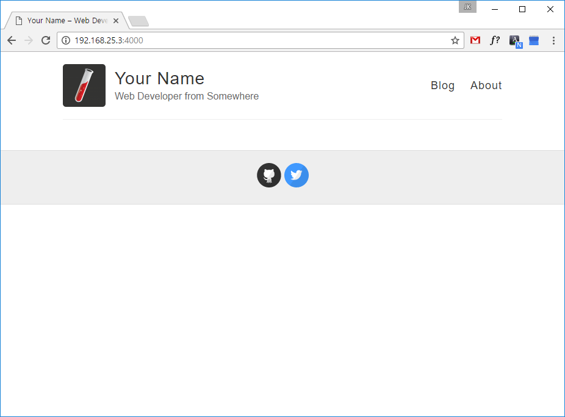
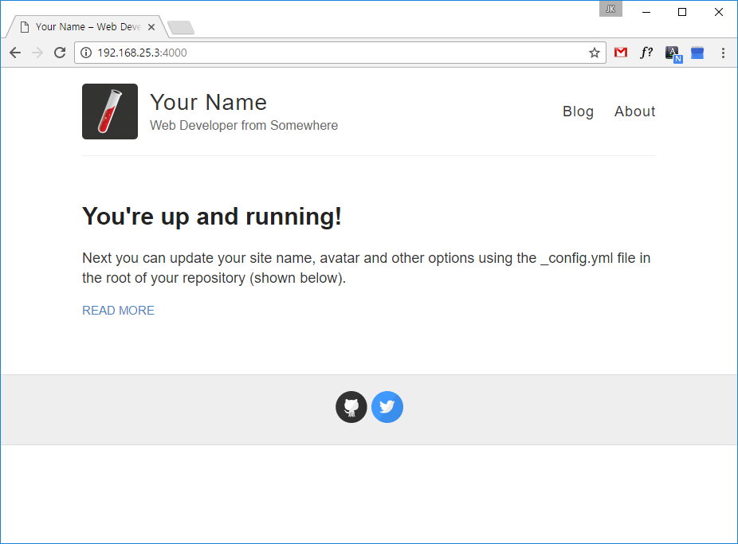

Jekyll + Github page 의 조합
history
Jekyll 설치
jkpark@cactus:~$ gem install jekyll
버전 확인
jkpark@cactus:~$ jekyll -v
jekyll 3.4.0
github-pages 설치
jkpark@cactus:~$ sudo gem install github-pages
[sudo] password for jkpark:
...
Fetching: nokogiri-1.6.8.1.gem (100%)
Building native extensions. This could take a while...
ERROR: Error installing github-pages:
ERROR: Failed to build gem native extension.
current directory: /var/lib/gems/2.3.0/gems/nokogiri-1.6.8.1/ext/nokogiri
/usr/bin/ruby2.3 -r ./siteconf20170225-14571-taczen.rb extconf.rb
mkmf.rb cant find header files for ruby at /usr/lib/ruby/include/ruby.h
extconf failed, exit code 1
Gem files will remain installed in /var/lib/gems/2.3.0/gems/nokogiri-1.6.8.1 for inspection.
Results logged to /var/lib/gems/2.3.0/extensions/x86_64-linux/2.3.0/nokogiri-1.6.8.1/gem_make.out
에러가 발생했다.
검색결과에 따라 ruby-dev와 zlib1g-dev를 설치하였다.
jkpark@cactus:~$ sudo apt-get install ruby-dev
다음 새 패키지를 설치할 것입니다:
libgmp-dev libgmpxx4ldbl ruby-dev ruby2.3-dev
jkpark@cactus:~$ sudo apt-get install zlib1g-dev
다음 새 패키지를 설치할 것입니다:
zlib1g-dev
다시 github-pages 설치 시도
jkpark@cactus:~$ sudo gem install github-pages
...
Done installing documentation for nokogiri, i18n, thread_safe, tzinfo,
activesupport, html-pipeline, gemoji, jemoji, jekyll-mentions,
jekyll-relative-links, jekyll-optional-front-matter, jekyll-readme-index,
jekyll-default-layout, jekyll-titles-from-headings, minima, jekyll-swiss,
jekyll-theme-primer, jekyll-theme-architect, jekyll-theme-cayman,
jekyll-theme-dinky, jekyll-theme-hacker, jekyll-theme-leap-day,
jekyll-theme-merlot, jekyll-theme-midnight, jekyll-theme-minimal,
jekyll-theme-modernist, jekyll-theme-slate, jekyll-theme-tactile,
jekyll-theme-time-machine, unicode-display_width, terminal-table,
github-pages after 24 seconds
32 gems installed
jkpark@cactus:~$
저장소를 다운받을 위치에서 이동 후 git clone
jkpark@cactus:/storages/storage1$ git clone https://github.com/jkpark/jkpark.github.io.git
이 상태에서 jekyll serve 명령어를 입력하면 http://127.0.0.1:4000 에서 웹사이트를 볼 수 있지만,
나는 ssh로 원격접속중이기에, 내 서버 아이피인 192.168.25.3 을 추가로 넣어준다.
jkpark@cactus:/storages/storage1/jkpark.github.io$ jekyll serve --host=192.168.25.3
Configuration file: /storages/storage1/jkpark.github.io/_config.yml
Configuration file: /storages/storage1/jkpark.github.io/_config.yml
Source: /storages/storage1/jkpark.github.io
Destination: /storages/storage1/jkpark.github.io/_site
Incremental build: disabled. Enable with --incremental
Generating...
done in 0.212 seconds.
Auto-regeneration: enabled for '/storages/storage1/jkpark.github.io'
Configuration file: /storages/storage1/jkpark.github.io/_config.yml
Server address: http://192.168.25.3:4000/
Server running... press ctrl-c to stop.
브라우저에서 실행된 웹사이트를 확인해보았지만 아래 그림과 같이 포스트가 보이지 않았다.

원인은 _post에 있는 markdown 파일의 날짜형식이 YYYY-MM-DD이어야만 한다는 것이었다.
jkpark@cactus:/storages/storage1/jkpark.github.io/_posts$ ls
2014-3-3-Hello-World.md
jkpark@cactus:/storages/storage1/jkpark.github.io/_posts$
jkpark@cactus:/storages/storage1/jkpark.github.io/_posts$ mv 2014-3-3-Hello-World.md 2014-03-03-Hello-World.md
jkpark@cactus:/storages/storage1/jkpark.github.io/_posts$ ls
2014-03-03-Hello-World.md
위와 같이 수정 후 다시 serve 하니 정상적으로 페이지가 보였다.
